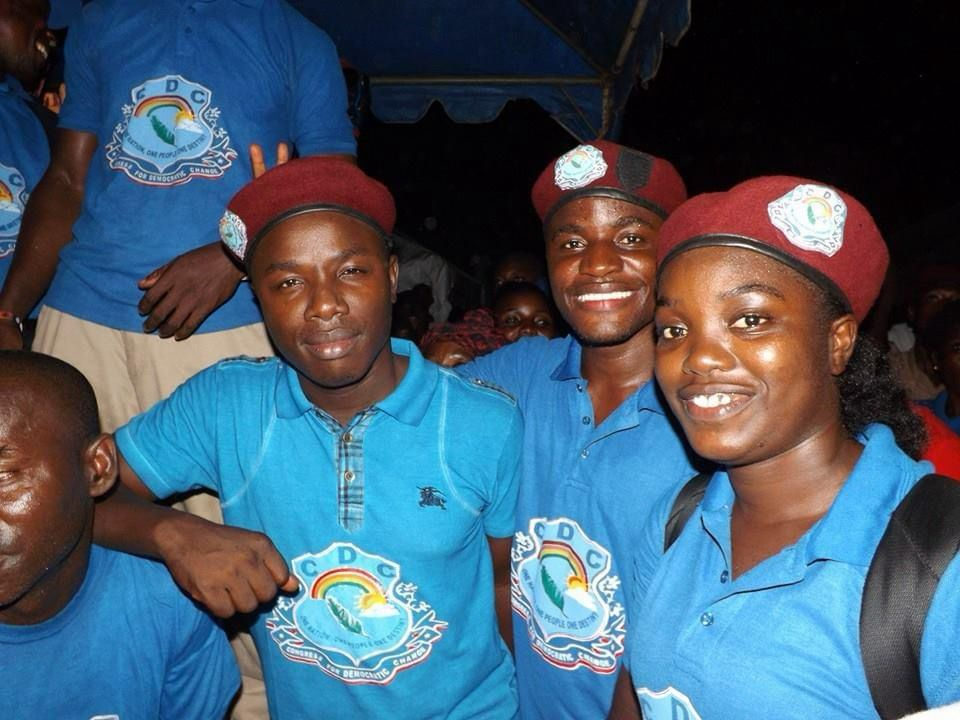

Who We Are
The Revolutionary National Youth League is a dynamic and dedicated youth organization under the Congress for Democratic Change (CDC). We strive to promote patriotism, service, and leadership among Liberia's youth. Our mission is to inspire and cultivate the next generation of leaders who will champion national progress and uphold the values of integrity and unity.
